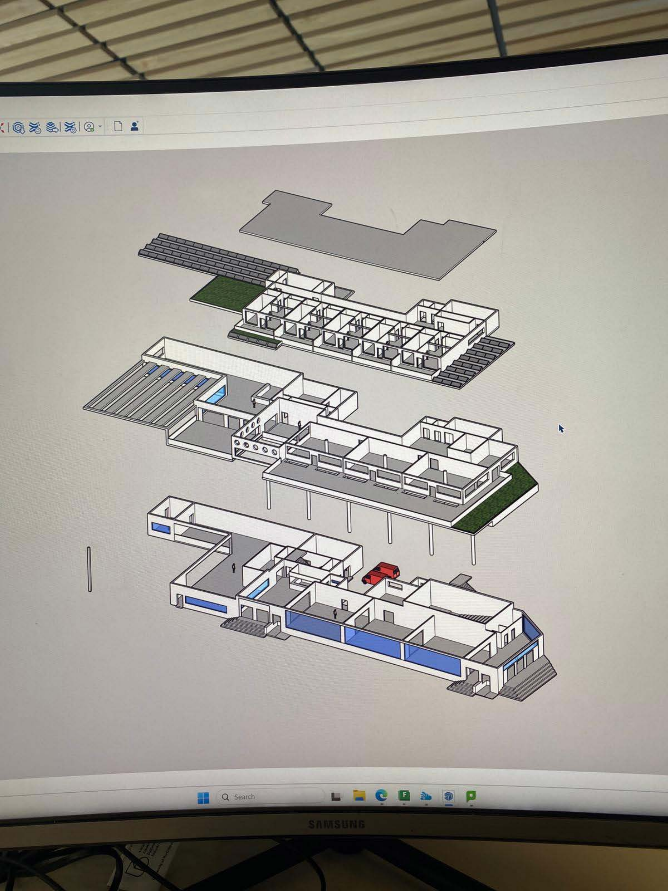
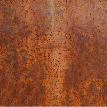
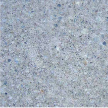
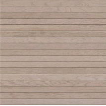
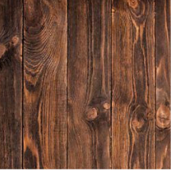
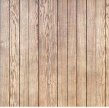
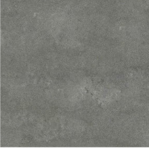
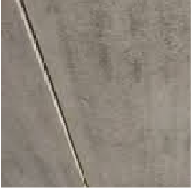

Major Project · Phase 2 · Solo Building
Major Project · Phase 2 · Solo Building
Overview
A civic maritime hub on Portsmouth's southern waterfront, designed to give back more than it takes. The building occupies a historically sensitive site at The Hard, between the naval dockyard and the city — a threshold that has defined Portsmouth's relationship with the sea for centuries.
Three marine environmental charities — Blue Marine Foundation, the Marine Conservation Society, and Hampshire & Isle of Wight Wildlife Trust — occupy public galleries set alongside a shared research workshop, wet lab, and internal dock. Visitors can observe active research directly, so the building functions as both attraction and working facility.
A restaurant, cafe, lecture theatre, and residential apartments sit above and around the research core. The building reads as landscape before it reads as architecture: a green berm rises from the public realm, sheltering the dock below and forming a continuous accessible roof that connects back to the surrounding city.
Materials are drawn from the industrial waterfront: GGBS concrete reduces embodied carbon by over 50%, corten steel ages in reference to the dockyard, and timber surfaces the public interior. Nothing was chosen for effect alone.
Renders


From top: waterfront elevation; public realm; rooftop accessible berm; residential apartment
Renders


Concept & Process
The design began with the ground. The berm is not a formal device — it is a response to the flood risk of a waterfront site, the desire to create a continuous public roof, and the need to screen the dock from street-level noise without closing it off.
Early process work (sketches, massing studies) focused on the relationship between the research wing and the public galleries. Several configurations were tested before settling on a lateral arrangement that keeps research and exhibition genuinely adjacent — visitors walking past glass can see the workshop below without any barrier framing it as spectacle.
The exploded axonometric shows how programme layers: the dock and workshop at the lowest level, the research and gallery floors above, residential and hospitality stepping back on the upper floors, and the berm as a continuous green surface tying everything together from outside.


Technical Drawings


Site plan · Ground floor · First floor · Second floor · Sectional perspective · West section · North section
Technical Drawings


South elevation · East elevation
Process




Materials






